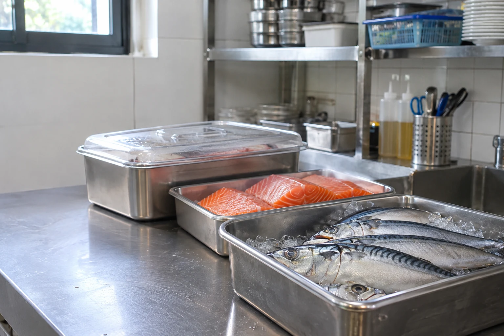

OUR STORY
원물의 가치를 높이다
매장에서 시작된 고민이
선도마루가 되기까지.
활어 전처리 현장에서 사용하는 체내 주입형 제품.

BLACK PRO · 실제 사용 현장 사진
장사가 잘되는 날에는 생선이 금방 나갑니다.
하지만 손님이 적은 날에는 생선이 남습니다.
비싼 돈 주고 들여왔는데,
결국 버려야 할 때도 있습니다.
버릴 때마다 마음이 아팠습니다.

팔리지 않은 생선을 버려야 하는 날도 있습니다.
“손님 온다고 회 준비했는데 안 올 때요. 그럼 다 버려요.”
18년 경력 횟집 운영자 인터뷰“활어 값하고 해산물 값이 제 매출의 60% 정도 차지해요.”
횟집 운영자 인터뷰“가뜩이나 없는 손님이 더 줄까 봐 가격도 못 올리고 난감하다.”
노량진 횟집 운영자 인터뷰위 인용문은 보도된 운영자 인터뷰 사례를 바탕으로 정리했습니다. 공개·상업적 활용 전 원문 및 출처 확인이 필요합니다. 특정 제품 사용 후의 결과나 후기가 아닙니다.
OUR STORY
매장에서 시작된 고민이
선도마루가 되기까지.
고민의 시작
장사가 잘되는 날에는 생선이 금방 나갑니다.
하지만 손님이 적은 날에는 생선이 남습니다.
손님상에 올려보지도 못하고
버릴 때면 마음이 아팠습니다.
방법을 찾다
남은 생선의 선도를 지킬 방법을 찾았습니다.
여러 방법을 알아보고 직접 시도했습니다.
그러다 원료를 배합해 보기 시작했습니다.
개발의 계기
직접 만든 배합액을 생선에 뿌려두고
바쁜 일에 잊고 있었습니다.
며칠 뒤 다시 꺼내 보고
그 배합을 더 살펴보기 시작했습니다.
3년간의 현장 사용
다양한 원료를 써보고 배합을 바꿨습니다.
매장에서 직접 사용하며
3년 동안 만들고 고치기를 반복했습니다.
선도마루의 탄생
아는 사람들에게도 써보라고 권했습니다.
직접 써본 사람들이 주변에 추천했고
판매해 보라는 권유도 받았습니다.
그렇게 선도마루를 출시했습니다.
블랙 프로는 활어의 전처리를 위해 체내에 주입하여 사용하는 수산물 전용 소스입니다.
활어 전처리에서 체내 주입 공정까지 진행하는 전문가를 위해 개발했기에 ‘PRO’라는 이름을 붙였습니다.
실제 사용 현장 사진
어종과 작업 조건에 따라 적정 적용 여부를 확인해 주세요. 상세 작업 순서는 기존 공정에 익숙한 전문가를 위해 생략했습니다. 실제 사용 시 제품의 최종 표시사항과 관련 위생·안전 기준을 확인해 주세요.
취급하는 어종도, 작업 방식도 업장마다 다릅니다.
셰프님과 업장 대표님들이 각자의 현장에 맞춰 살펴보고, 저희가 소개한 것보다 다양한 활용 방법을 찾아가시길 바랍니다.
제품의 표시된 사용 범위와 안전 기준 안에서 적용해 주세요. 새로운 용도나 방법은 사용 전 적합 여부를 확인해야 합니다.
지금 사용하는 재료의 전처리 과정에 어떻게 적용할지 궁금하다면 게시판에 문의해 주세요.
어종과 작업 방식, 현재 공정을 알려주시면 현장에서 쌓은 경험을 바탕으로 함께 고민하겠습니다.
문의 내용을 확인한 뒤 가능한 한 빠르게, 구체적으로 답변드리겠습니다.
문의 시 어종 · 작업 방식 · 궁금한 점을 남겨주세요.
현장에서 시작된 고민에서
선도마루가 나왔습니다.